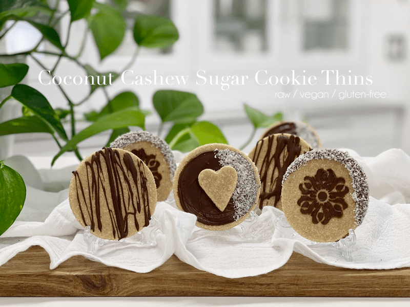
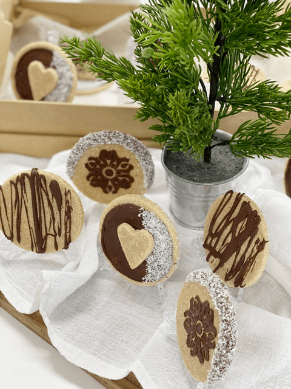

Coconut Cashew Sugar Cookie Thins
A wafer-thin, firm but chewy cookie that is the perfect snack to satisfy that sweet craving without sacrificing quality, health, or taste. These cookie thins are reminiscent of sugar cookies. That wasn’t my intent, but I am one to go with the flow. They are firm to the touch but have a little chew to them. What I most like about them is the fact that they aren’t TOO sweet (unlike most sugar cookies, again, that wasn’t my intent, but I need to compare it to something…)

We all love cookies
Chocolate chip, peanut butter, oatmeal, sugar, these simple childhood favorites just never seem to go out of style. When the holidays roll around, we become kitchen artists, wielding cookie cutters and icing bags to create everything from the simplest gingerbread men to shimmering, glittery cutout snowflakes. I do realize that it’s a bit more challenging to replicate all the amazing decorating techniques that the cooked world has to offer. But I am ok with making such sacrifices to feed my body with better quality ingredients.
There are several distinct stages when making rollout cookies. It’s easy to break the process down to accommodate your schedule and can be spread out over several weeks.
- The cookie dough can be made in advance and refrigerated (up to 1 week) or frozen (up to a couple of months).
- The cookies can be rolled, cut, dehydrated, and stored in an airtight container (for a week) or in the freezer (up to a month), before being decorated.
- The finished (decorated) cookies can be frozen for up to a month (depending on the decorations).
Ingredient Chatter
For the base of this recipe, I used finely ground cashews, coconut, and cassava flour. I did this for several reasons. They are all neutral in appearance, flavor, and they are all gluten-free. When grinding down the cashews, it’s important to know that they won’t break down to a fine flour powder. In fact, if you aren’t too careful, you could find yourself well on your way to making cashew butter.
The dried coconut I used was already finely ground. If you have larger flakes, be sure to grind them down to a flour-like texture before adding it to the recipe. I used coconut to add a hint of sweetness and lightness to the cookies. If you use more nut flour in its place, the cookies will be denser.
Lastly, cassava flour,t it too is very mild and neutral in flavor. It’s also not grainy or gritty in texture – rather, it’s soft and powdery. For future use, it is gluten-free, nut-free, grain-free. The cassava plant is a staple crop to millions of inhabitants in South America and parts of Asia and Africa. The plant produces the cassava root (also known as yuca), a starchy, high-carbohydrate tuber – similar to yam, taro, plantains, and potato. I must add it is NOT a raw product. So, if that is an issue for you, substitute it with more ground cashews or coconut.
Well, it’s time to strap yourself into that apron and get busy in the kitchen. I hope you enjoy this simple yet delicious cookie recipe. Please share your thoughts down below and have a blessed day, amie sue

Ingredients:
yields 32 cookies (1/8″ thick – 2 3/4″ round)
- 2 cups (307 g) cashews, finely ground
- 2 cups ( 216 g) macaron finely shredded coconut
- 1/4 cup (38 g) coconut sugar, finely ground
- 1/4 cup (36 g) cassava flour (or almond flour)
- 1/2 tsp (3 g) sea salt
- 3/4 cup (135 g) water
- 2 tsp (8 g) vanilla extract
- 1/2 tsp (2 g) almond extract
Preparation
- Start by grinding the cashews down a tiny crumble in the food processor.
- Add the shredded coconut, coconut sugar, cassava flour, and salt. Process until everything is well mixed.
- If you need to, you can swap the cassava flour for almond flour.
- Open the lid and drizzle the water, vanilla, and almond extract around the bowl. Return the lid and process until the batter starts to form a ball as it spins.
- Prepare your work station by laying a piece of plastic wrap on the countertop.
- Remove all the batter from the food processor and mold it into a ball.
- Roll out your dough out between two pieces of plastic wrap or parchment paper to 1/4″ thickness.
- For ease of handling, roll smaller rather than larger chunks of dough.
- Using a circular cookie cutter, dip it into some water and then press the cookie cutter into the dough.
- The water will help prevent the cookie cutter from sticking to the dough.
- Gently remove the cookie shapes from the plastic and transfer it to the mesh sheet that comes with the dehydrator.
- Repeat this process until all the dough is used up.
- Dehydrate for 1 hour at 145 degrees (F), then reduce the heat to 115 degrees for roughly 12 hours or until it reaches the texture that you desire.
- If decorating the cookies, allow them to completely before decorating.
- Store in an airtight container as moisture will soften the cookies… but then again, maybe you like that.
- Store on the countertop for 1-2 weeks
- Store in the freezer for up to 3 months.
Decorating – optional
To decorate with chocolate, you can melt vegan chocolate chips, or you can make raw hardening chocolate. Before you melt the chocolate, make sure that you have everything set out for your decorating session. If your chocolate starts to thicken up throughout the process, you can place it in the dehydrator to soft it. I used a small paintbrush and a little stencil for some of the decor. For the white dusting, I used superfine dried coconut. Be creative and have fun with it!
© AmieSue.com